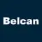

400+
Hours of Industry Experience
Gained through a summer engineering co-op at Belcan.
Mechanical Engineering · The Ohio State University
B.S. Mechanical Engineering · Class of 2029
I’m a Mechanical Engineering student with summer co-op experience in aerospace component detailing, CAD drafting, and design-change support. I bring a careful, collaborative approach to practical engineering challenges, with interests in aerospace, manufacturing, and product design.
400+
Gained through a summer engineering co-op at Belcan.
15+
Created or supported during my summer engineering co-op at Belcan.
Selected experience
My co-op introduced me to aerospace component design and the detail-oriented work that supports manufacturing.

Summer engineering co-op
Supported aerospace component detailing and drafting, managed design changes, and collaborated with engineering and design teams.
View experienceBeyond the classroom
I apply engineering concepts through team projects and student organizations.
Projects & skills
Explore my turbine blade analysis, MATLAB project, CAD tools, and technical skills.
Explore technical work.webp)
.webp)
Engineering organizations
Collaborative, hands-on teams connect my interests in aerospace, design, and engineering for community impact.
Explore my activities